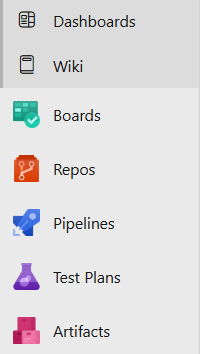
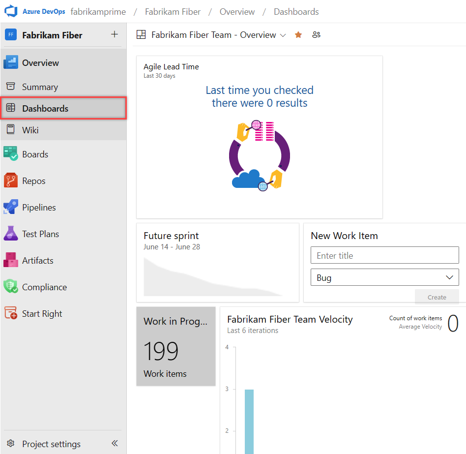

一個平台,涵蓋整個開發生命週期
Azure DevOps 是 Microsoft 提供的雲端開發平台,將軟體專案從「規劃」到「上線」所需的工具整合於同一處。它不是單一工具,而是一組可獨立使用、又能彼此串接的服務——需求管理、原始碼控制、自動化建置部署、測試管理與套件托管,各司其職。
相較於把 Jira、GitHub、Jenkins、Nexus 等工具各自串接,Azure DevOps 的核心價值在於可追蹤性 (traceability):一個 work item 可以直接連結到提交它的 commit、驗證它的 pull request、建置它的 pipeline 與測試它的 test case。整條鏈在同一平台內自動串起。
兩層容器:組織與專案
使用 Azure DevOps 前,須先理解兩層容器的關係。登入後的網址形如 dev.azure.com/<organization>/<project>,正好對應這兩層:
| 層級 | 角色 | 典型對應 |
|---|---|---|
| Organization | 最上層帳號容器,管理計費、使用者與多個專案 | 一間公司、一個部門 |
| Project | 實際工作的邊界,內含 Boards / Repos / Pipelines 等服務與獨立的權限設定 | 一個產品、一條產品線 |
一個 Organization 下可建立多個 Project,彼此預設互相隔離,各自擁有 work item、儲存庫、管線與安全群組。產品彼此獨立或權限須嚴格隔離時才適合分開建 Project;否則官方傾向「一個 Project + 多個 Team」,讓各 Team 共享 backlog 與報表、又能各自管理看板與 area path,避免跨 Project 資料難以聚合的問題。
導覽列上的五個 hub
進入任一 Project,左側導覽列由上而下排列著五大核心服務。本系列接下來四堂課,正是依此順序逐一展開。先建立整體印象:

| 服務 | 負責什麼 | 典型使用者 |
|---|---|---|
| Boards | 以 work item 規劃與追蹤工作:Epic / Feature / User Story / Task、Backlog、看板、Sprint | PM、Scrum Master、全體成員 |
| Repos | Git 原始碼托管:分支、Pull Request、分支原則、程式碼審查 | 開發人員 |
| Pipelines | CI/CD 自動化:程式碼推送後自動建置、測試、打包與部署到各環境 | 開發、DevOps |
| Test Plans | 測試管理:手動測試案例、探索性測試、利害關係人意見回饋 | 測試人員 |
| Artifacts | 套件托管:NuGet / npm / Maven / Python 等套件 feed 與版本管理 | 開發、平台團隊 |
五者皆可單獨啟用——例如只用 Repos + Pipelines 做原始碼與 CI/CD,而把需求管理留在其他工具。但當五者整合使用時,跨服務的自動連結才會發揮最大效益。
Plan → Code → Build → Test → Deploy
五大服務並非孤立存在,而是對應軟體開發生命週期的各個階段。一個需求從提出到上線,會依序流經這些服務:
一般工作流程如下:
- 在 Boards 規劃 work item,排入 Sprint。
- 開發人員在 Repos 開分支寫程式,送 Pull Request 並關聯 work item。
- 合併觸發 Pipelines 自動建置、跑測試、打包,必要時取用 Artifacts 的套件。
- 測試人員於 Test Plans 執行手動測試,缺陷自動連回需求與建置。
- Pipelines 將通過驗證的版本部署到各環境,並透過儀表板監控進度與品質。
導覽列頂端的 Overview 區塊
除了五大服務,左側導覽列頂端還有一組以「資訊呈現與協作」為主的 hub,歸在 Overview 之下:
| Hub | 用途 |
|---|---|
| Summary | 專案首頁:README、成員、近期活動與各服務的快速入口 |
| Dashboards | 可自訂的儀表板,以 widget 拼出建置狀態、燃盡圖、查詢結果等即時資訊 |
| Wiki | 專案知識庫,以 Markdown 撰寫文件、架構說明與操作手冊 |
其中 Dashboards 最值得善用——它是團隊每日站立會議的共同畫面。將「目前 Sprint 燃盡圖」「進行中的 work item」「最近建置結果」等 widget 集中於一頁,即可一眼掌握專案健康度。

此外,跨服務的協作能力也內建於各處:work item 表單可 @mention 成員與留言、commit 與 PR 可雙向連結 work item、變更可訂閱通知。這些設計讓溝通保持在「有上下文」的位置,而非散落於外部聊天工具。
三種存取層級,免費起步
Azure DevOps 以「存取層級 (access level)」決定每位使用者能用哪些功能。理解三種層級,有助於規劃團隊授權成本:
| 存取層級 | 能做什麼 | 費用 |
|---|---|---|
| Stakeholder | 檢視儀表板與 work item、建立與編輯 work item;不能用完整的 Repos/Pipelines 功能 | 免費、不限人數 |
| Basic | 完整使用 Boards、Repos、Pipelines、Artifacts | 前 5 位使用者免費 |
| Basic + Test Plans | Basic 的全部功能,外加 Test Plans 的測試規劃與執行 | 付費授權 |
對小型團隊而言,起步幾乎零成本:最多 5 位 Basic 使用者免費,加上不限數量的 Stakeholder。PM、業務、利害關係人等非工程角色可用免費的 Stakeholder 層級參與需求討論與檢視進度。Pipelines 另有免費的平行作業額度 (私有專案每月 1,800 分鐘)。
從零到可用的起步流程
實際開通一個可用環境,大致經過以下步驟:
dev.azure.com,建立組織並選擇資料存放區域。